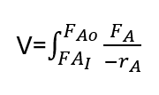
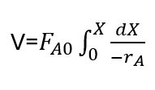
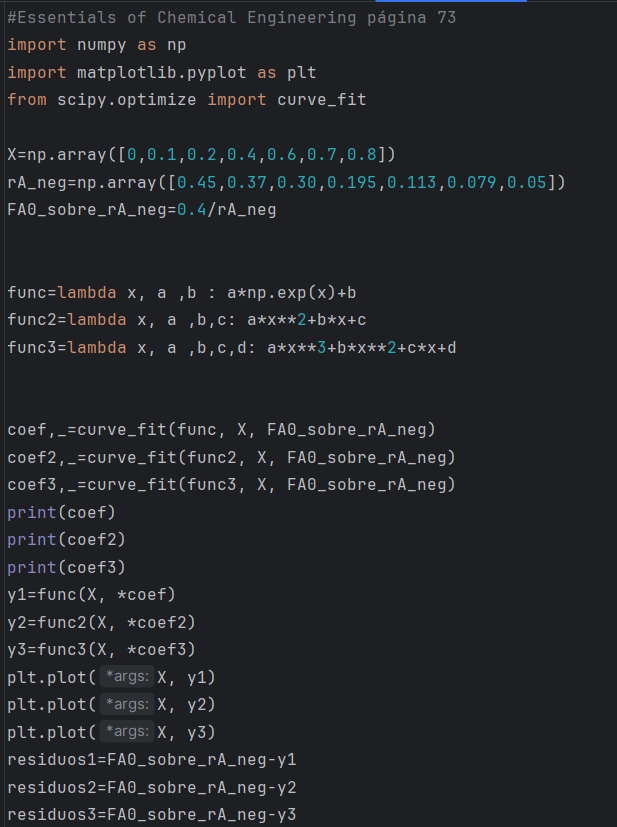
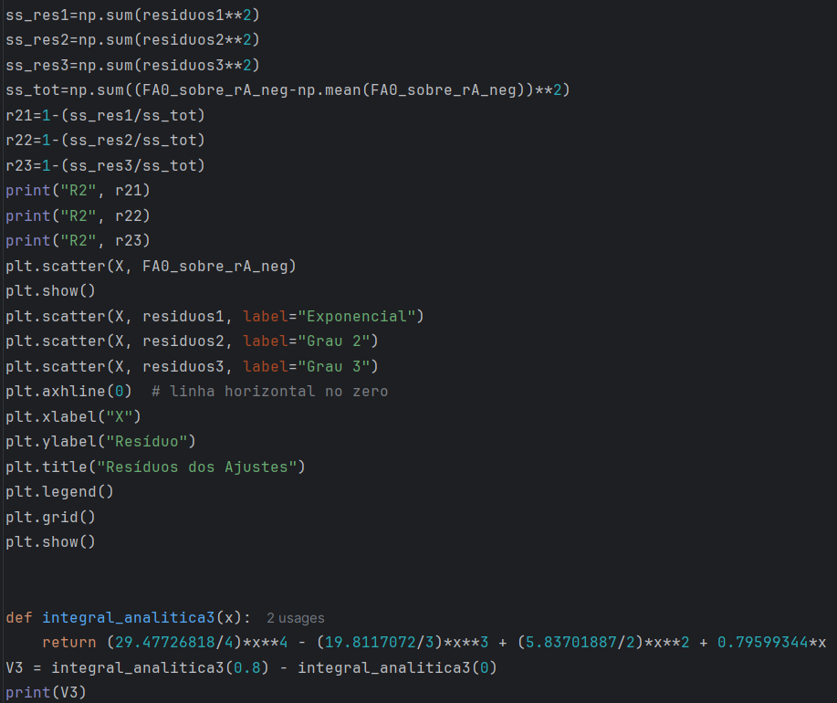
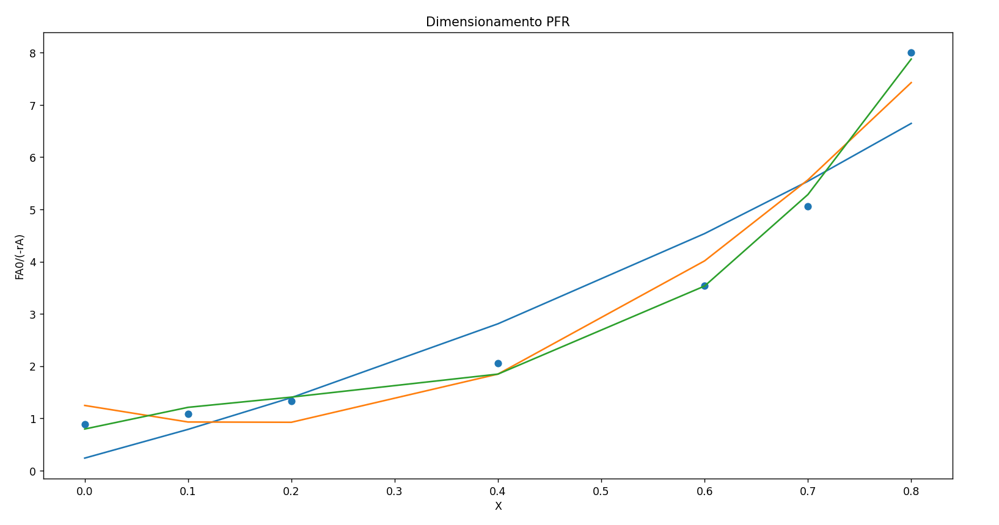

Um PFR (Plug Flow Reactor) é um reator tubular no qual há um fluxo de entrada de reagentes e um fluxo de saída dos produtos. Nesse tipo de reator operando de forma estacionária, a concentração dos reagentes varia de forma contínua na direção axial.Consequentemente, a velocidade de reação também varia nessa direção. Não há variação de velocidade de reação na direção radial.
Na Figura 1 é apresentada a equação para determinação do volume V de um PFR, alimentado com uma vazão molar FA0, com uma corrente de saída FAi e velocidade de reação -rA.

Escrevendo a vazão FA em função da conversão X e substituindo na equação da Figura 1, teremos a equação de dimensionamento do PFR em função da conversão, apresentada na Figura 2.

Para dimensionar um PFR a partir da equação da Figura 2, precisamos gerar dados de velocidade de reação em função da conversão. Esses dados são apresentados na Tabela 1 e foram retirados do livro "Essentials of Chemical Engineering".
Segundo o método proposto no livro citado, deve-se plotar o gráfico da razão FA0/(-rA) em função da conversão X. Depois disso, basta calcular a área sob a curva plotada e obteremos o volume do reator em função de uma dada conversão.
Aqui no Química Programada iremos utilizar Python para obter uma função que represente a variação de FA0/(-rA) com a conversão. Depois disso, iremos calcular a integral da função obtida. No livro "Essentials of Chemical Engineering", o método consiste em usar fórmulas aproximadas para cálculo da área abaixo da curva que foi plotada.
| X (conversão) | Velcidade de reação (-rA em mol/m3.s) |
|---|---|
| 0 | 0,45 |
| 0,1 | 0,37 |
| 0,2 | 0,30 |
| 0,4 | 0,195 |
| 0,6 | 0,113 |
| 0,7 | 0,079 |
| 0,8 | 0,05 |
Para obtenção do modelo que representa melhor a curva FA0/(-rA) em função da conversão X, foi realizada 3 ajustes : um exponencial, um quadrático e um cúbico. Os comandos para obtenção dos ajustes e plotagem dos gráficos são apresentados nas Figuras 3 e 4.
Na Figura 5, temos a representação gráfica para os três modelos escolhidos (expencial em azul, quadrático em laranja e cúbico em verde). E possível, por visualização, verificar que o modelo que mais se ajusta aos dados é o modelo cúbico. Isso é confirmado pelos valores que obtivemos para o R2: exponencial, 0,89956; quadrático, 0.97174; cúbico, 0.99669. Dessa forma escolhemos o modulo de um polinômio cúbido para calcular o volume do reator. O modelo obtido é f(X)=29,4773*X3-19,8117*X2+5,8370*X + 0.7960.


Como fizemos a ajuste da curva com polinômio, ficou bastante fácil obter a integral. Dessa forma, foi obtida a integral da função f(X) e calculou-se o valor do volume do reator usando-se a fórmula apresentada na Figura 2. O valor obtido foi de 2,1419 m3. O valor obtido no exemplo resolvido no livro "Essentials of Chemical Engineering" foi de 2,165 m3.
Desenvolvimento : Química Programada